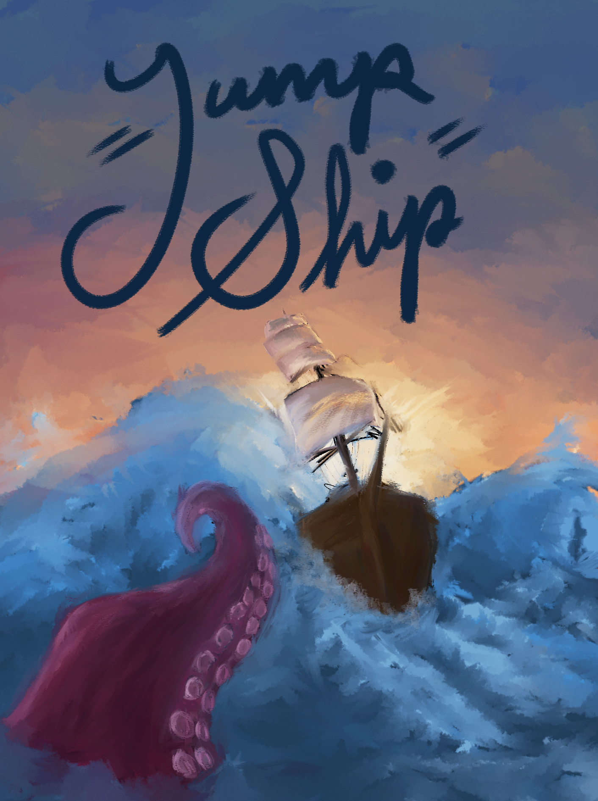

Jump Ship!
This project was a 8 week sprint with a small group of friends to see what we could do. We are quite happy with the result, especially since it was our first time working in Unity.
Jump Ship! is an infinite runner where the player is a pirate sailing the high seas. Dodge rocks, krakens, and other dangers in the sea... or just gun them down with your massive cannon! Be careful though, you only get a few cannonballs, so be sure to collect power-ups in the form of fruits to replenish your ammo or gain a limited protective barrier.
If you'd like to take to the seas yourself, you can download this game on the Google Play store or play in your web browser on itch.io. The best part about it all (besides the gameplay): there aren't any of those annoying advertisements!